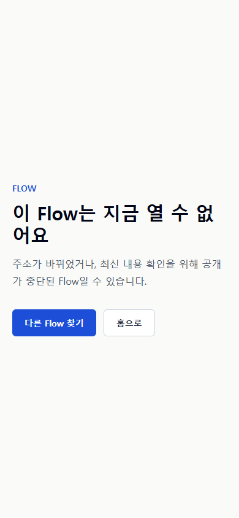
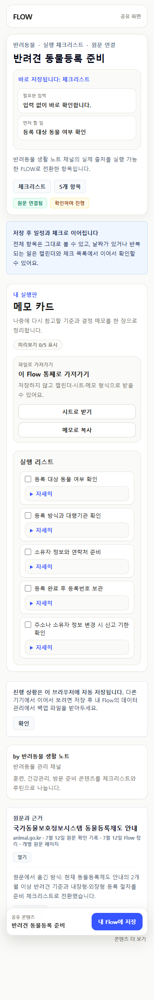
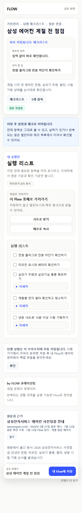
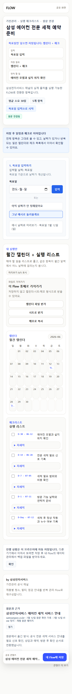
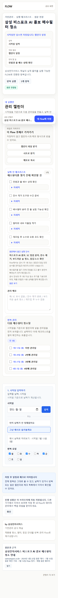
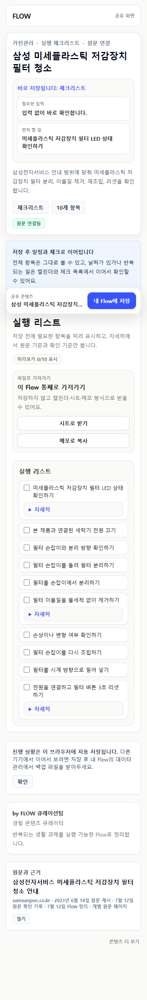
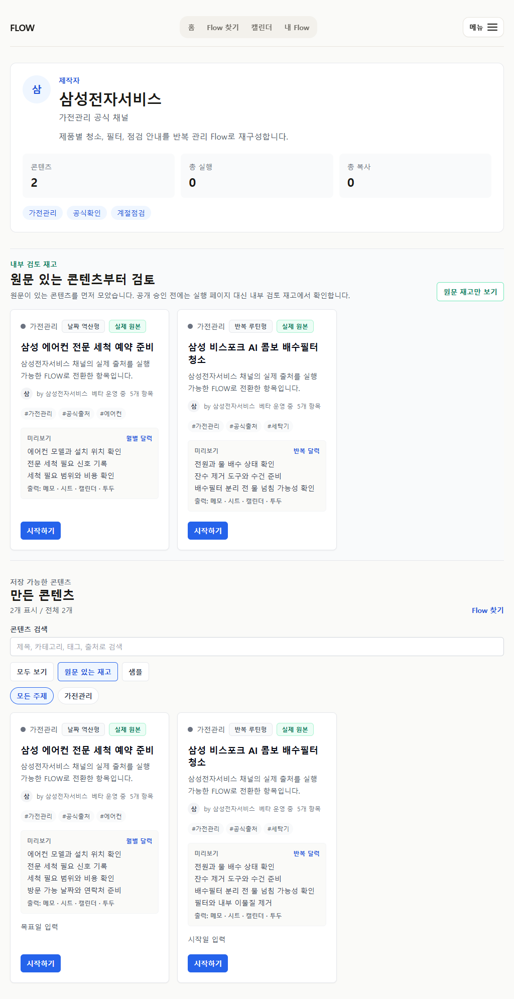

2026-07-12 · source currentness
열리는 페이지와
지금 써도 되는 Flow를 분리했습니다
게시 시점이 오래됐다는 이유로 숨기지 않고, 제목이 비슷하다는 이유로 합치지 않았습니다. 현재 공식 원문이 실제 사용자 과업을 뒷받침하는지까지 대조했습니다.
접속URL과 응답 상태
시점게시·수정·재확인일
적합성현재 원문과 실행 행 일치
중복같은 사용자 과업인지
판정
| 대상 | 현재 판정 | 사용자 표면 |
|---|---|---|
| 정부24 반려견 등록 구형 사본 | 접속은 되지만 현재 방식과 불일치, 최신 정본과 중복 | public 닫힘, 최신 국가 시스템 Flow로 대체 |
| 삼성 에어컨 | 자가점검과 전문 세척은 서로 다른 과업 | 5항목 즉시 체크 / 전문 세척 예약 타임라인 |
| 삼성 세탁기 | AI 콤보 배수필터와 미세플라스틱 장치는 다른 하드웨어 | 주 1회 관리 / LED 신호 기반 즉시 체크 |
중요: 2023년에 게시된 미세플라스틱 저감장치 원문은 현재도 열리고 10개 실행 행과 정확히 맞으므로 유지했습니다. “오래됨”은 단독 폐기 사유가 아닙니다.
모바일 시나리오







검증 경계
단위 테스트 106건과 관련 Playwright 5개 시나리오를 통과했습니다. 실제 사용자 관찰은 아직 0회이며, 다음 현재성 감사 대상은 자동차검사와 컴활 원문입니다.